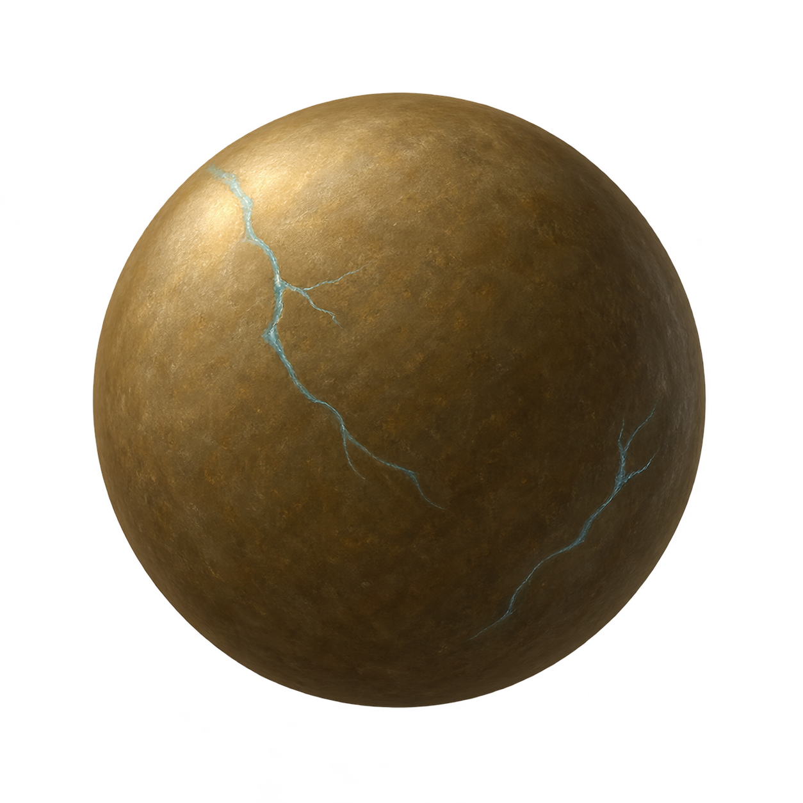
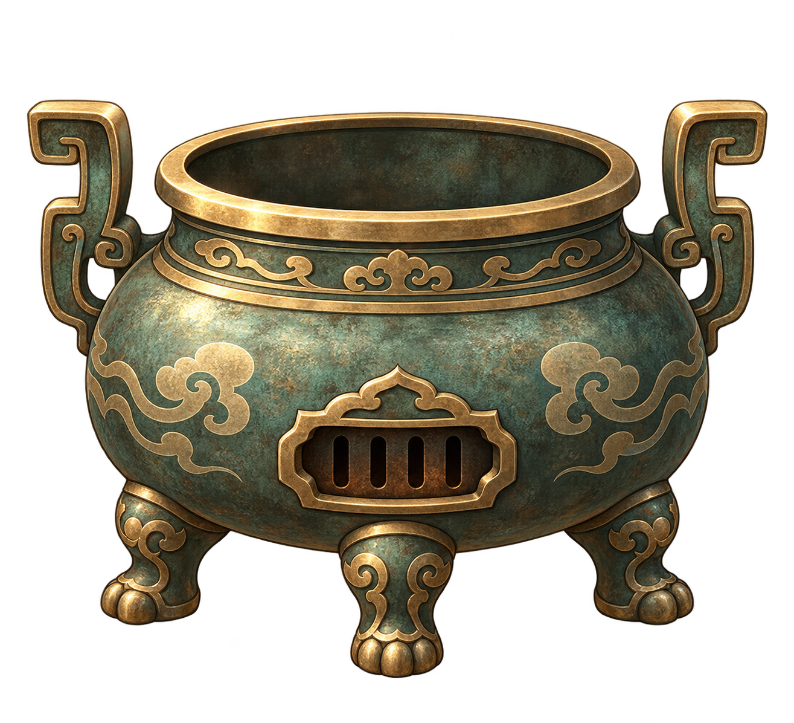
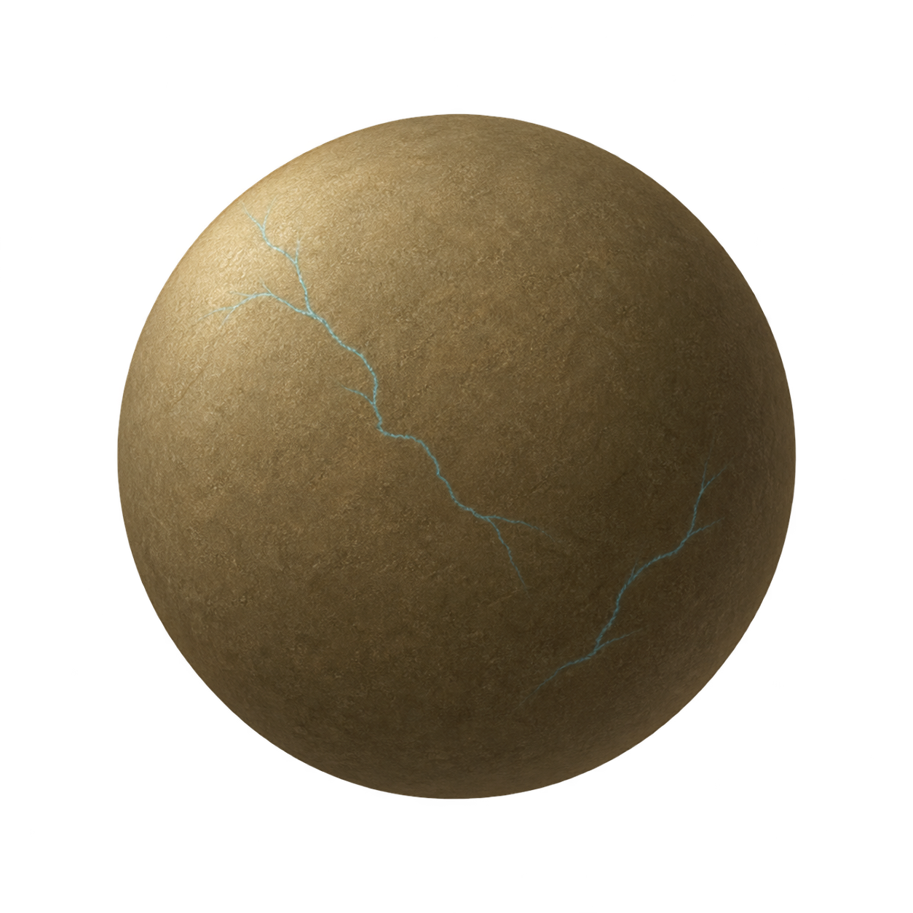
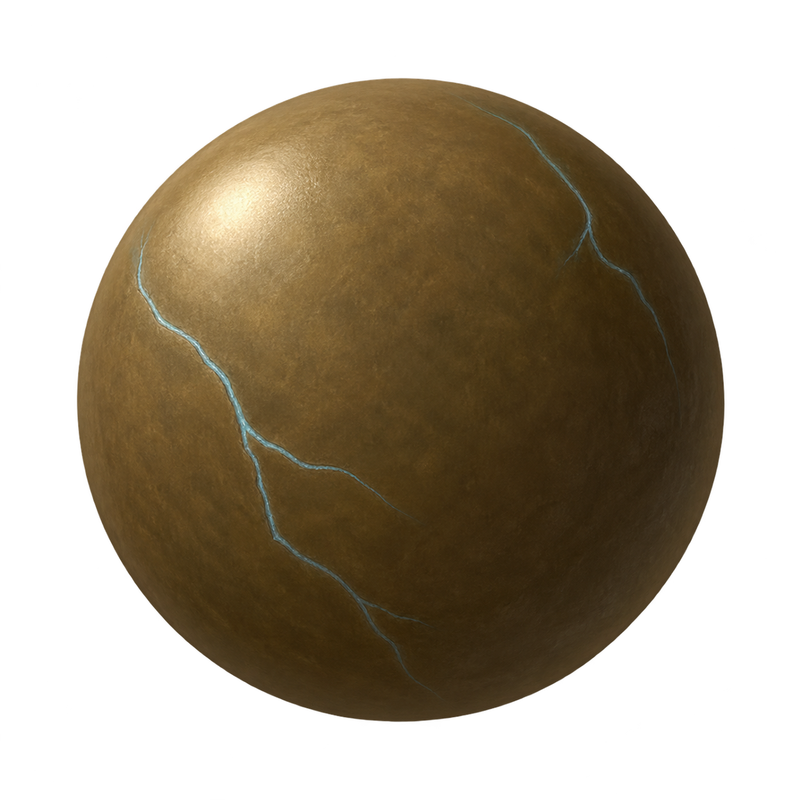

细润蜜丸


游戏尺寸 · 118px

三案使用同一低饱和茶褐草青底色与浅蓝凝纹，只比较表面质感。上方看源图，下方按 118px 放到现有丹炉旁。均为生成式完整透明 PNG，没有代码绘制裂纹或滤镜染色。




三案是互斥的整体美术方向，不把表面光泽绑定到品质等级。后续仍由丹体底色表达药性、凝纹颜色表达品质。真实丸剂的材质研究只作参考，彩色裂隙是本游戏的幻想表达。
本页为视觉方案预览，不替换当前游戏素材。返回当前游戏